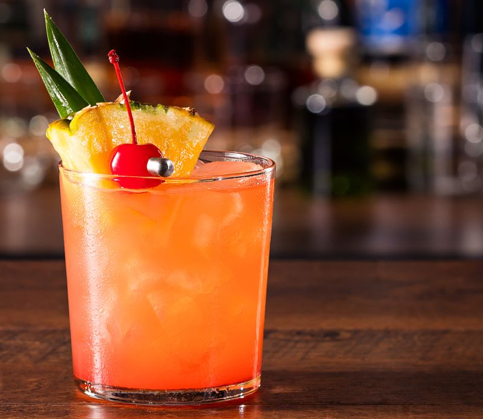

Mai Tai

Ingredientes:
45 ml de rum envelhecido
15 ml de rum escuro
30 ml de suco de limão fresco
15 ml de xarope de orgeat (xarope de amêndoas)
15 ml de licor de laranja (como Curaçao)
Gelo
Ramo de hortelã e fatia de laranja para decorar
Modo de preparo:
Encha um copo alto com gelo.
Adicione o rum envelhecido, o rum escuro, o suco de limão, o xarope de orgeat e o licor de laranja no copo.
Mexa suavemente os ingredientes com uma colher de bar por cerca de 20 a 30 segundos para misturar bem e resfriar a bebida.
Decore o copo com um ramo de hortelã e uma fatia de laranja.
Sirva imediatamente e aproveite o seu refrescante Mai Tai!
O Mai Tai é um coquetel tropical clássico, conhecido por suas notas cítricas e sabores complexos de rum. Experimente diferentes
tipos de rum para criar variações de sabor únicas. Aprecie seu Mai Tai e transporte-se para um ambiente tropical!